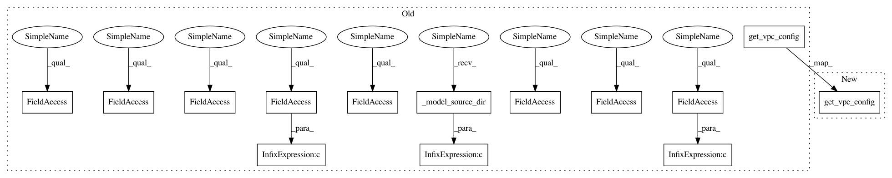

cef7c5c808d36ccd9c2a53a3bfdfaa8295feb318,src/sagemaker/chainer/estimator.py,Chainer,create_model,#Chainer#Any#Any#Any#Any#Any#Any#,167
Before Change
object. See :func:`~sagemaker.chainer.model.ChainerModel` for full details.
return ChainerModel(
self.model_data,
role or self.role,
entry_point or self.entry_point,
source_dir=(source_dir or self._model_source_dir()),
enable_cloudwatch_metrics=self.enable_cloudwatch_metrics,
name=self._current_job_name,
container_log_level=self.container_log_level,
code_location=self.code_location,
py_version=self.py_version,
framework_version=self.framework_version,
model_server_workers=model_server_workers,
image=self.image_name,
sagemaker_session=self.sagemaker_session,
vpc_config=self.get_vpc_config(vpc_config_override),
dependencies=(dependencies or self.dependencies),
)
After Change
In pattern: SUPERPATTERN
Frequency: 3
Non-data size: 14
Instances
Project Name: aws/sagemaker-python-sdk
Commit Name: cef7c5c808d36ccd9c2a53a3bfdfaa8295feb318
Time: 2020-03-19
Author: matt.mcclean@gmail.com
File Name: src/sagemaker/chainer/estimator.py
Class Name: Chainer
Method Name: create_model
Project Name: aws/sagemaker-python-sdk
Commit Name: cef7c5c808d36ccd9c2a53a3bfdfaa8295feb318
Time: 2020-03-19
Author: matt.mcclean@gmail.com
File Name: src/sagemaker/pytorch/estimator.py
Class Name: PyTorch
Method Name: create_model
Project Name: aws/sagemaker-python-sdk
Commit Name: cef7c5c808d36ccd9c2a53a3bfdfaa8295feb318
Time: 2020-03-19
Author: matt.mcclean@gmail.com
File Name: src/sagemaker/chainer/estimator.py
Class Name: Chainer
Method Name: create_model
Project Name: aws/sagemaker-python-sdk
Commit Name: cef7c5c808d36ccd9c2a53a3bfdfaa8295feb318
Time: 2020-03-19
Author: matt.mcclean@gmail.com
File Name: src/sagemaker/mxnet/estimator.py
Class Name: MXNet
Method Name: create_model